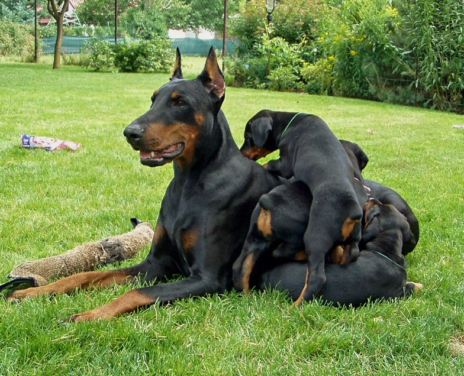

Jak probíhá rezervace štěněte?
Rezervace štěněte probíhá po předchozí osobní nebo telefonické domluvě a složení rezervačního poplatku. Vždy preferujeme, aby se budoucí majitelé přijeli na štěňátka i naši stanici podívat osobě.
Postup rezervace v krocích:
- Kontaktujte nás e-mailem nebo telefonicky s informací o vašich představách a zkušenostech s chovem.
- Domluvíme si termín nezávazné osobní návštěvy u nás v chovatelské stanici.
- Po oboustranné dohodě podepíšeme rezervační smlouvu a složíte rezervační zálohu.
S jakou výbavou štěně odchází do nového domova?
Každé štěně od nás odchází řádně odčervené, očkované, čipované a s vystaveným mezinárodním očkovacím průkazem (Europasem). Do začátku od nás dostane startovací balíček s krmivem, hračkou a dekou s vůní matky.
Jsou rodiče štěňat zdravotně testovaní?
Ano, všichni naši chovní jedinci procházejí zdravotními testy specifickými pro plemeno dobrman, včetně vyšetření srdce (DCM), HD, ED a vWD. Výsledky testů jsou plně k nahlédnutí všem zájemcům o štěně.
Poskytujete chovatelský servis i po odběru?
Zůstáváme v trvalém kontaktu se všemi novými majiteli našich odchovů a jsme připraveni vám kdykoliv poradit. Rádi pomůžeme s výchovou, správným krmením, výcvikem i s případnou přípravou na výstavy.
Přehled poskytovaných služeb a výbavy
| Služba / Položka | Popis | Cena |
|---|---|---|
| Startovací balíček | Krmivo na první dny, deka s vůní matky, hračka a obojek | V ceně štěněte |
| Dokumentace | Průkaz původu FCI, kupní smlouva, mezinárodní očkovací průkaz | V ceně štěněte |
| Chovatelský servis | Doživotní poradenství ohledně výživy, výcviku a péče | Zdarma |
Náš chov
